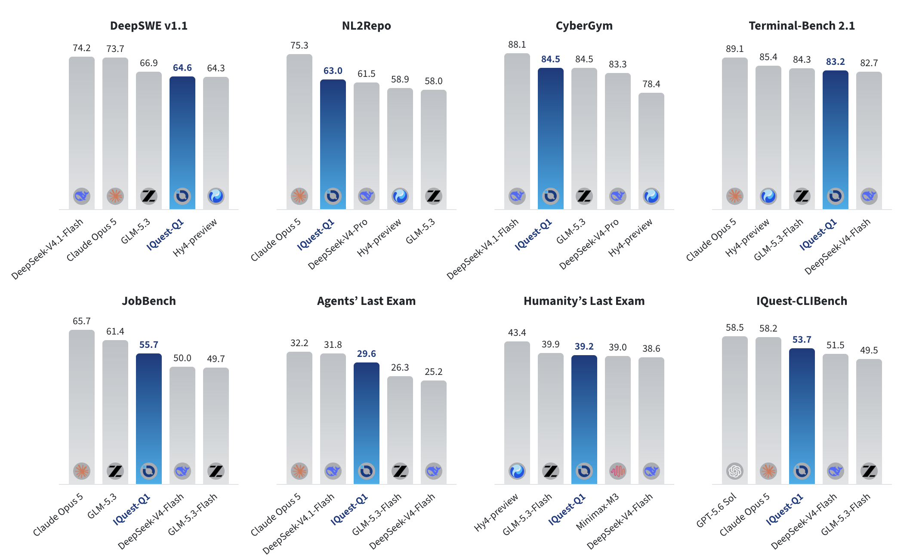
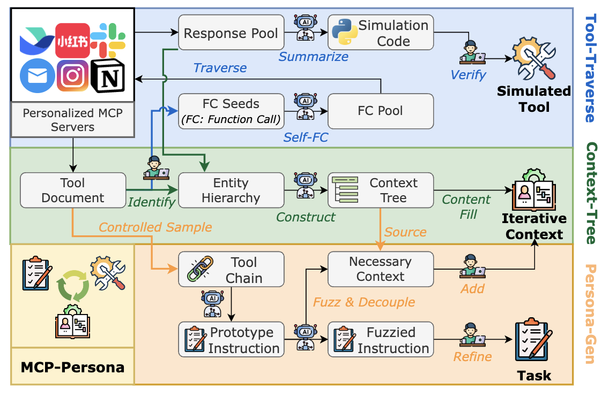
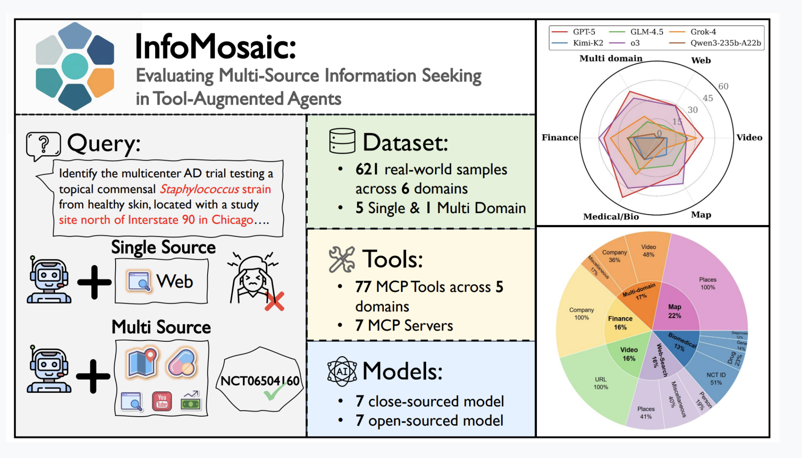
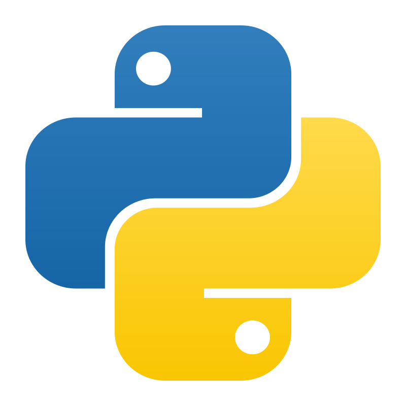
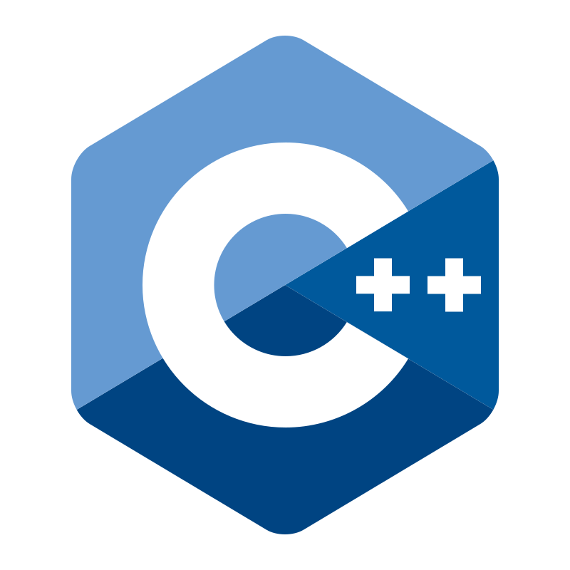
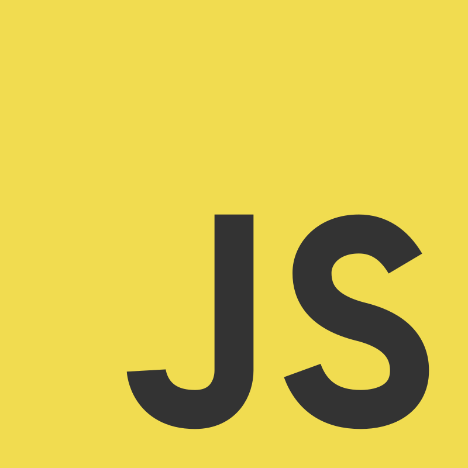
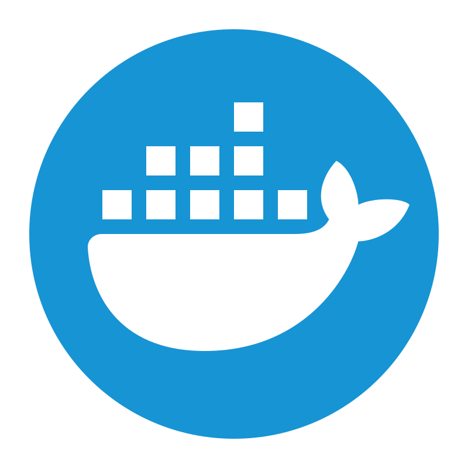
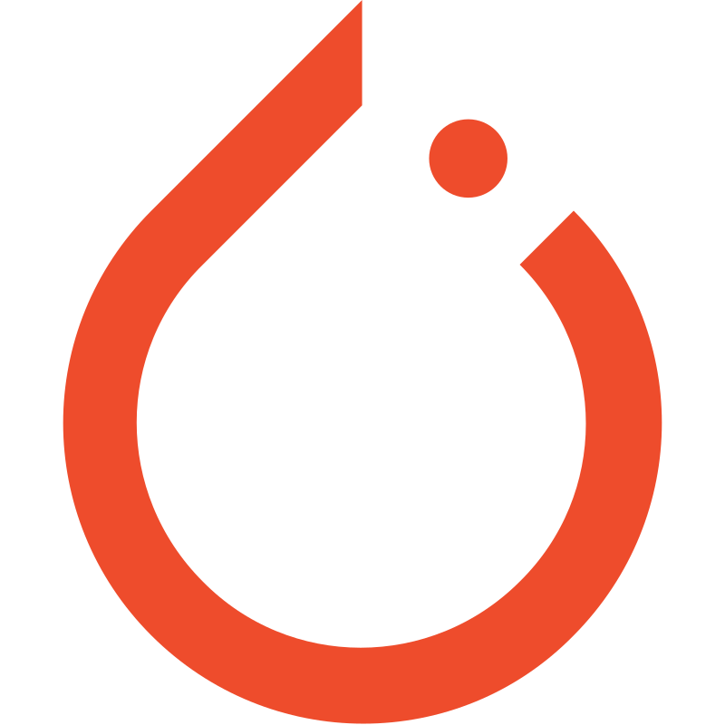

About Me
Xiyuan Yang (杨希渊) is now an undergraduate in School of Artificial Intelligence, Shanghai Jiao Tong University (SJTU-SAI). He ranked SECOND of 66 in grades and received honors including the National Scholarship (6 scholarships in total). He joined the research group MAGIC in SJTU, under the supervision of Prof. Siheng Chen.
My research interests lie in continuously pushing the capability boundaries of language intelligence. I focus on two key directions: scalable agentic data synthesis and training pipeline, which generates high-quality instances and agent trajectories for mid-training and post-training, with a particular emphasis on improving performance on long-horizon tasks; and recursive self-improvement (RSI) systems, which enable efficient, iterative model improvement through both training-time and inference-time approaches, with a particular emphasis on enhancing models' capabilities for automated post-training.
Topics I'm currently interested in:
- Self-Evolving Agents for Autonomous LLM Post-Training (RSI)
- Long-Horizon Agentic Instance Construction and Training
- Agentic Harness Reinforcement Learning
Education

Shanghai Jiao Tong University
B.S. in Artificial Intelligence, School of Artificial Intelligence
2024 - 2028
GPA: 4.1/4.3 (Ranked 2 out of 62)
Score: 94.0/100
Scholarships: National Scholarship (first 3%), "Han Ying Ju Hua" Scholarship (15 per year), Zhiyuan Honor Scholarships (first 50%), SJTU Undergraduate Excellence Scholarship
High Graded Courses:
- Comprehensive Programming Practice: 100/100
- Probability and Statistics (Honor): 100/100
- Algorithm Design and Analysis: 100/100
- Numerical Analysis: 100/100
- Linear Algebra (Honor): 98/100
- Fundamentals of Programming (Honor): 98/100
- Fundamentals of ML, DL and RL: 98/100
Experience
IQuest Research (IQuest Coder)
Internship, LLM Post-Training
2026.7 - Present
MAGIC Lab
Undergraduate Research Assistant
Advisor: Prof. Siheng Chen
2024.12 - Present
Publications & Tech Projects

IQuest-Q1: Advancing Foundation Capabilities for Agentic CLI Systems


Open Source Projects
Active GitHub committer with 30+ open-source repositories and 1500+ commits.

Open-Source Projects
Course Labs
Technical Blogs
Maintainer of Xiyuan Yang's Technical Blog. I regularly publish technical content focusing on computer science and AI. To date, I have authored over 120 articles with a cumulative word count exceeding 450,000 words.
GitHub Repository / Blog Website
I also maintain Frontier LLM Notes (https://xiyuanyang-code.github.io/llm/), an actively growing set of write-ups tracking the fast-moving LLM field. It covers model architectures, pretraining / midtraining / post-training recipes, concrete training techniques, core infrastructure with source-level LLM codebase analysis, and agentic LLMs.
Skills
Programming Languages



Tools

ML & DL & LLM

Languages
-
English (CET-6: 584)